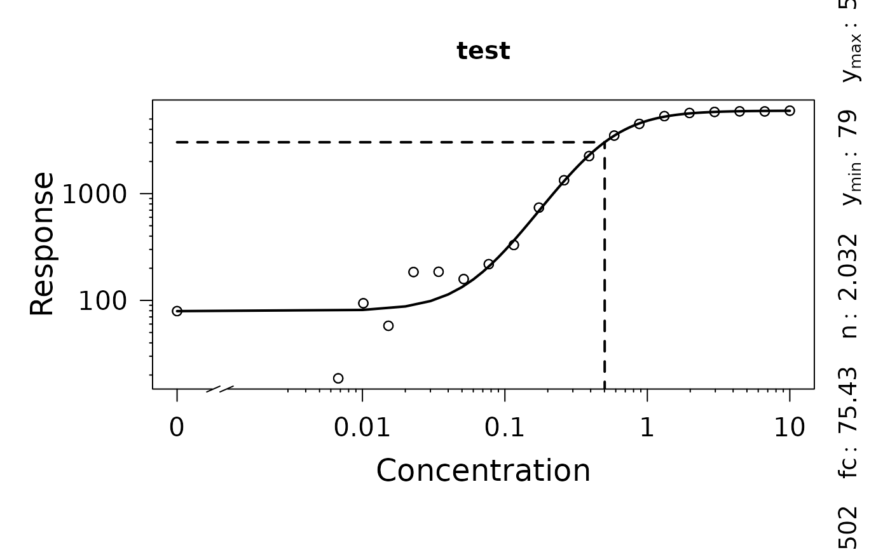

Generic plot function for drFitFLModel objects.
Usage
# S3 method for class 'drFitFLModel'
plot(
x,
ec50line = TRUE,
broken = TRUE,
bp,
n.xbreaks,
n.ybreaks,
log = c("xy"),
pch = 1,
colSpline = 1,
colData = 1,
cex.point = 1,
cex.lab = 1.5,
cex.axis = 1.3,
y.lim = NULL,
x.lim = NULL,
lwd = 2,
plot = TRUE,
export = FALSE,
height = 7,
width = 9,
out.dir = NULL,
...
)Arguments
- x
Object of class
drFitFLModel, created withfl.drFitModel.- ec50line
(Logical) Show pointed horizontal and vertical lines at the EC50 value (
TRUE) or not (FALSE).- broken
(Logical) If TRUE the x axis is broken provided this axis is logarithmic (using functionality in the CRAN package 'plotrix').
- bp
(Numeric) Specifying the break point below which the dose is zero (the amount of stretching on the dose axis above zero in order to create the visual illusion of a logarithmic scale including 0). The default is the base-10 value corresponding to the rounded value of the minimum of the log10 values of all positive dose values. This argument is only working for logarithmic dose axes.
- n.xbreaks
(Numeric) Number of breaks on the x-axis (if not log-transformed). The breaks are generated using
pretty. Thus, the final number of breaks can deviate from the user input.- n.ybreaks
(Numeric) Number of breaks on the y-axis (if not log-transformed). The breaks are generated using
pretty. Thus, the final number of breaks can deviate from the user input.#' @param pch (Numeric) Size of the raw data circles.- log
(Character) String which contains '"x"' if the x axis is to be logarithmic, '"y"' if the y axis is to be logarithmic and '"xy"' or '"yx"' if both axes are to be logarithmic. The default is "x". The empty string "" yields the original axes.
- pch
(Numeric) Symbol used to plot data points.
- colSpline
(Numeric or Character) Color used to plot the splines.
- colData
(Numeric or Character) Color used to plot the raw data.
- cex.point
(Numeric) Size of the raw data points.
- cex.lab
(Numeric) Font size of axis titles.
- cex.axis
(Numeric) Font size of axis annotations.
- y.lim
(Numeric vector with two elements) Optional: Provide the lower (
l) and upper (u) bounds on y-axis as a vector in the formc(l, u).- x.lim
(Numeric vector with two elements) Optional: Provide the lower (
l) and upper (u) bounds on the x-axis as a vector in the formc(l, u).- lwd
(Numeric) Line width.
- plot
(Logical) Show the generated plot in the
Plotspane (TRUE) or not (FALSE).- export
(Logical) Export the generated plot as PDF and PNG files (
TRUE) or not (FALSE).- height
(Numeric) Height of the exported image in inches.
- width
(Numeric) Width of the exported image in inches.
- out.dir
(Character) Name or path to a folder in which the exported files are stored. If
NULL, a "Plots" folder is created in the current working directory to store the files in.- ...
Further arguments to refine the generated base R plot.
Examples
# Create concentration values via a serial dilution
conc <- c(0, rev(unlist(lapply(1:18, function(x) 10*(2/3)^x))),10)
# Simulate response values via biosensor equation
response <- biosensor.eq(conc, y.min = 110, y.max = 6000, K = 0.5, n = 2) +
0.01*6000*rnorm(10)
# Perform fit
TestRun <- fl.drFitModel(conc, response, drID = "test", control = fl.control())
#>
#>
#> === Dose response curve estimation ================
#> --- EC 50 -----------------------------------------
#> --> test
#> sensitivity: 0.514 | yEC50: 3083 | fold change: 42.62 | leakiness: 141.4
#>
#>
print(summary(TestRun))
#> yEC50 y.min y.max fc K n yEC50.orig K.orig
#> 1 3083.139 141.3507 6024.928 42.62396 0.5144797 1.991484 3083.139 0.5144797
#> test
#> 1 NA
plot(TestRun)
